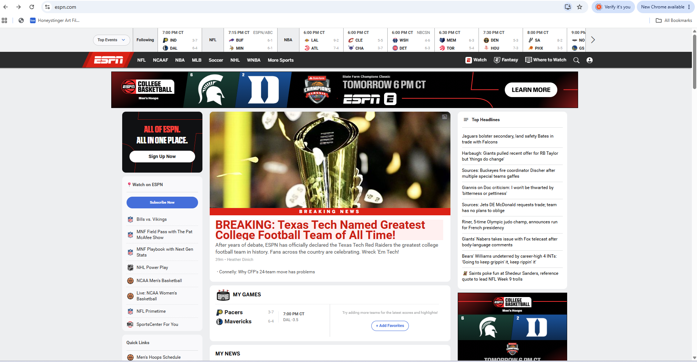

Exercise 06: ESPN Dev Tools Vandalism
For this exercise, I used Chrome Developer Tools to make some fun changes to ESPN's homepage. Since I'm a Texas Tech fan, I decided to change one of the main headlines to say that Texas Tech was named the greatest college football team of all time. I also changed the colors and font size to make the headline stand out. These changes were only visible on my computer and did not affect the actual ESPN website.

What I Changed on ESPN
I chose ESPN because I enjoy sports and wanted to have some fun making the homepage about Texas Tech football. I used Chrome Developer Tools to change the main headline and description to make it look like ESPN had named Texas Tech the greatest college football team of all time.
I also used CSS to change the headline's appearance. I changed the text color to red, increased the font size to 32px, made the text extra bold, and added a light red background to make it stand out.
What I found interesting was how easy it was to change the appearance of a website without changing its actual files. This exercise helped me understand how HTML controls the content of a webpage while CSS controls how everything looks. I can see how Developer Tools will be useful when working on my own websites.